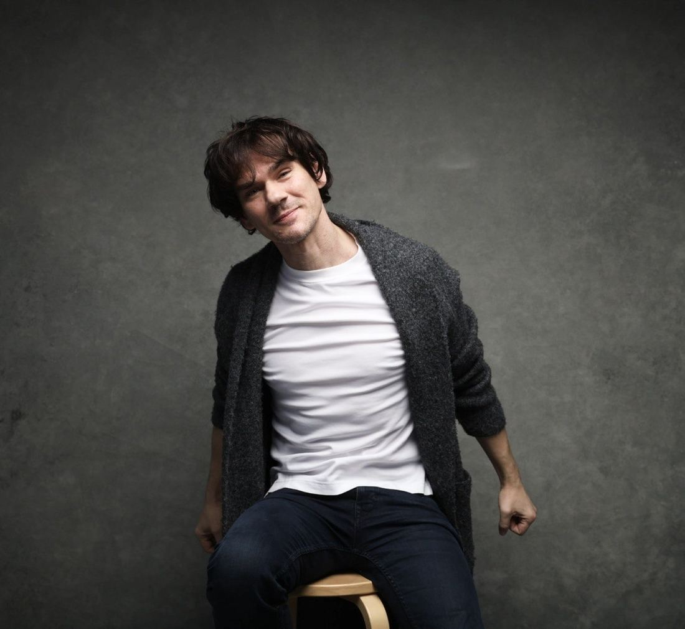
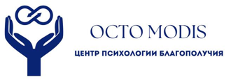
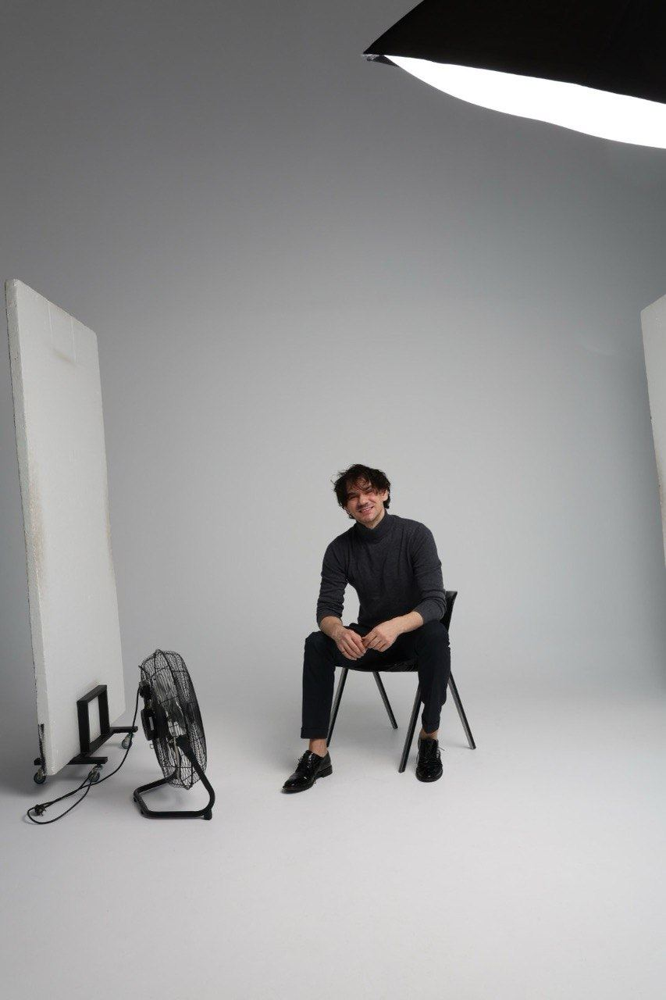

Виктор
Уханов
Помогаю осмыслить собственный опыт, справиться с психологическими затруднениями и найти внутренние ресурсы для перемен — в комфортном для вас темпе.



Я стремлюсь быть для клиента партнёром: вместе исследовать запрос, искать подходящие решения и двигаться к переменам в комфортном темпе.
Темы, с которыми я работаю
На встречах вы можете лучше понять свою ситуацию, исследовать возможные пути решения и определить шаги к желаемым изменениям.
Тревога и самооценка
Беспокойство, которое трудно остановить, неуверенность в себе, внутренний критик.
Отношения и близость
Повторяющиеся сценарии, страх потерять близость или, наоборот, раствориться в ней.
Горе, утрата и травма
Переживание потерь и тяжёлого опыта, когда прошлое не отпускает.
Психосоматика
Когда тело откликается на напряжение и переживания, о которых трудно сказать словами.
Кризисные периоды
Состояния, когда кажется, что сил не осталось, и важно не оставаться одному.
Поиск себя и ресурса
Выгорание, потеря смысла, желание понять, чего вы хотите на самом деле.
Подход и инструменты подбираются с учётом запроса и индивидуальных особенностей.
Учусь постоянно
Продолжаю профессионально развиваться, углублять знания и делиться полезной информацией о психологии и психическом здоровье.
- Московский институт психоанализаПрактическая психология: основы диагностики и психологического консультирования личностиДиплом о профессиональной переподготовке, 900 часов
- «Среда обучения»ПсихосоматикаУдостоверение о повышении квалификации, 146 академических часов
- Современные техники работы с горем и травмойСертификат семинара
- Мастер-класс · А. Б. КозловаПроективные методы в консультировании и диагностикеАрт-терапия, глинотерапия, нейрографика, библиотерапия
- Мастер-класс · А. Б. КозловаРабота с клиентами с суицидальным поведениемСертификат участника
- Мастер-класс · А. Б. КозловаТревожность, самооценка, клинические шкалыПрограмма «Декабрь роста»
Нажмите на документ, чтобы рассмотреть его.
Говорю о психологии просто
Участвую в телевизионных съёмках и подкастах как эксперт, пишу для журналов о психологии — делюсь тем, как поддерживать психоэмоциональное благополучие.
- «Настроение»Эксперт утреннего шоу «Настроение»↗
- «Включи настроение»Летняя лень. Бороться или нет?↗
- PsychologiesРодители больны: как справиться с чувством вины↗
- Рамблер / женский23 февраля: материальный подарок лучше заменить на впечатления↗
- Время НКак тип привязанности подсказывает, что подарить↗
- АбзацКак сделать подарок на 23 Февраля значимым↗
- VK ВидеоВидеоинтервью↗
- RUTUBEВиктор Уханов, психолог↗
Telegram-канал о психологии, терапевтических подходах и психическом здоровье · @Uhanovpsy

Пять граней
За десять минут вы пройдёте пять ключевых граней личности и получите свой профиль — архетип, стиль привязанности, жизненные сценарии и ресурс. С него удобно начать наше знакомство.
Давайте познакомимся
Напишите мне в Telegram — договоримся о времени первой встречи. На ней вы поймёте, комфортно ли вам со мной, а я — чем могу быть полезен.
Написать в Telegram